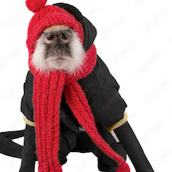

Boo Boo is a very sassy and energetic monkey! She loves bananas and eats 10 for breakfast, 15 for lunch, and 20 for dinner. Because of her love for bananas, she gets very glowy skin, and has attracted many modeling agencies
| MEET BOO BOO! |
| - |
|---|---|---|
Boo Boo is a very sassy and energetic monkey! She loves bananas and eats 10 for breakfast, 15 for lunch, and 20 for dinner. Because of her love for bananas, she gets very glowy skin, and has attracted many modeling agencies |
♡ |
| MEET BON BON! | 
| - |
|---|---|---|
Bon Bon is a very sweet and jumpy monkey! Sometimes she is a little camera shy, but she is very focused. She loves apples and bananas, and gets 4 apples a day. She never gets sick!!!!!
| ♡ | |
| MEET JARED! |  | - |
|---|---|---|
Jared is a very cute monkey. He has a little brother named George and likes to sleep with his stuffed animals. He likes to eat 40 bananas a day and has been in modeling for many years.
| ♡ | | |
| MEET BEEBEE! | - | |
Beebee loves to play with her friends Peppa and Dodo, who unfortunately don't do modeling with her. She sometimes runs away during photoshoots, but overall she is a very fashionable and cute model!
| ♡ | | |
| MEET BUBBY! | - | |
| Bubby is a very friendly and bubbly monkey. He loves everybody and loves to do photoshoots. His favorite shape are stars and likes to eat carrots. |